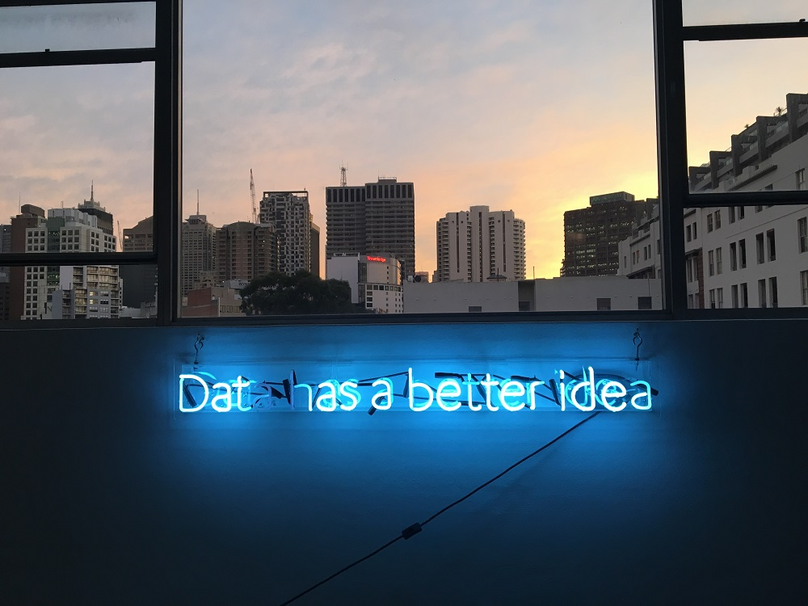

My Portfolio
Vedic Kundali: Birth Chart Generator
Kundali Milan: Compatibility Calculator
Drinkee: What Should I Drink?
Munchee: What Should I Eat?
H1-B Visa - Shiny App
Retail Data Analysis
NLP using Spark
Twitter Buzz Prediction
Sports Scheduling Using IBM Cplex

Texas Level R Competition, Winners 2nd Place

Marketing Solutions - Prescriptive Analysis
Copart Data Challenge
Spotify Songs Clustering for Personalized Recommendations
Education
Business Analytics, M.S.
The University of Texas at Dallas, 2018 - 2019
Masters of Science in Business Analytics with Data Science concentration
Engineering, B.E.
University of Mumbai, 2011 - 2015
Bachelor of Engineering in Electronics and Telecommunication
Artificial Intelligence, Master's
Udacity, 2025 - 2027 (in progress)
Machine learning and AI engineering for intelligent data systems
Certifications
AWS Certified Cloud Practitioner
AWS Certified AI Practitioner
My journey so far!
I started as a data engineer at Accenture, building ETL pipelines and reporting for enterprise clients, then earned my M.S. in Business Analytics at UT Dallas.
Since then I've built data products at Daimler, Microsoft and Nike, where I led data engineering and analytics for supply chain programs that saved over $70M. Today I'm a Senior Data Engineer at Kforce.
I design pipelines that are scalable, observable and resilient to failure, using SQL, Python, AWS, Databricks and Snowflake. I'm AWS Certified (Cloud Practitioner, AI Practitioner) and pursuing a Master's in AI to build intelligent systems that make data even more actionable.
Outside of work I'm passionate about sustainability, politics, music and DIY crafts. Let's connect if you'd like to collaborate on AI, politics or sustainability initiatives.
Professional Experience
Senior Data Engineer
Kforce Inc, India · Apr 2026 - Present
Building robust, resilient data pipelines on AWS, Databricks and Snowflake for enterprise clients.
Data Analytics Manager
Nike, Beaverton, OR · Nov 2021 - Sep 2025
Partnered with Product Creation, Manufacturing and Sustainability to salvage stranded materials, contributing to $70M+ in supply chain savings.
Analytics Consultant
Microsoft, Seattle, WA · Jun 2021 - Nov 2021
Delivered data and analytics solutions as a consultant, translating business requirements into automated reporting.
Lead Data Engineer · Data Analytics Manager
Nike, Portland, OR · Feb 2020 - Jun 2021
Engineered a centralized pipeline and reporting platform ingesting excess-inventory data from 80+ factories, surfaced in Tableau for directors.
Data Scientist
Daimler Trucks North America, Portland, OR · Jan 2019 - Jul 2019
Automated data extraction and statistical processes, cutting manual work by up to 90%.
Teaching Assistant
Jindal School of Management, Dallas, TX · Aug 2018 - Dec 2018
Supported R, Database Foundations and Python courses of ~60 students each.
Senior Data Engineer
Accenture, Mumbai, IN · 2015 - 2017
Built SQL and ETL pipelines powering 17 product reports for a release forecast at £10M+ revenue per quarter.
Software Engineer Intern
IIT Bombay, Mumbai, IN · Jan 2014 - Feb 2014
Coded 125 problems in Scilab to expand its open learning resources.
Services & Expertise
Data Engineering
Robust, resilient batch and streaming pipelines that are monitored, tested and recover gracefully from failure. Expertise: SQL, Python, Spark, AWS, Databricks, Snowflake.
AI Engineering Consulting
Turn your data into intelligent systems, from ML pipelines to LLM-powered applications, built on clean, production-ready data foundations.
Political Analysis
Data-driven analysis of elections, policy and public opinion, with clear visualizations that make complex trends easy to understand.
Sustainability Consulting
Measure and reduce waste across your supply chain, from tracking excess materials to building sustainability reporting that drives real savings.